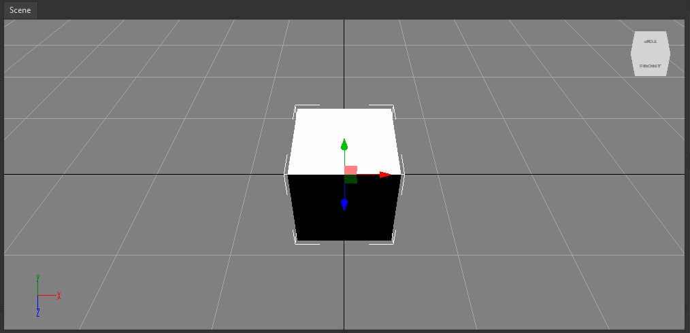
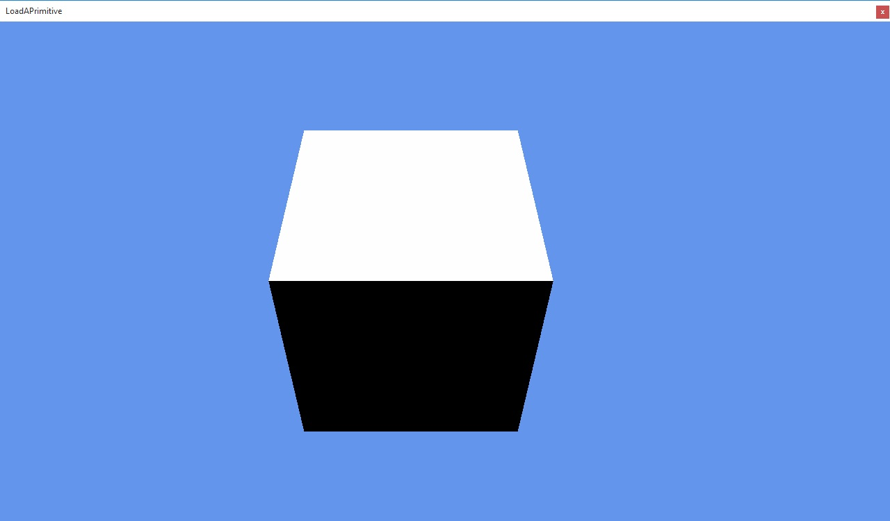

Goal
You will be guided through the steps needed to add a 3D primitive to an scene. Such primitives are basic meshes -plane, cube, sphere, etc.- whose configurations are built-in, and are often present on 3D modelling software such like 3D Studio or Blender.
Hands-on
With Wave Visual Editor
At Entities Hierarchy panel, right at the top right corner, you will find a "+" icon. Doing click on it, a context menu will display all the available predefined entities, whose contain Primitives 3D.

Just click on one of those, and the primitive will appear at the Viewport.

With Visual Studio (for Windows or Mac)
Every 3D primitive which can be added visually following above instructions, is available as well in source code. Model factory makes it really simple to add a cube, for instance. Within the dessired Scene, inside CreateScene() method, add the following lines:
var primitive = new Entity("Primitive")
.AddComponent(new Transform3D())
.AddComponent(new CubeMesh())
.AddComponent(new MeshRenderer())
.AddComponent(new MaterialComponent() { Material = new StandardMaterial() });
this.EntityManager.Add(primitive);

You can see the whole list of available primitive meshes in WaveEngine.Components.Graphics3D namespace.
Wrap-up
You have learned what is a basic primitive, and how to add those both visually and through source code. Model class will help you providing helper methods which directly return the dessired primitives.